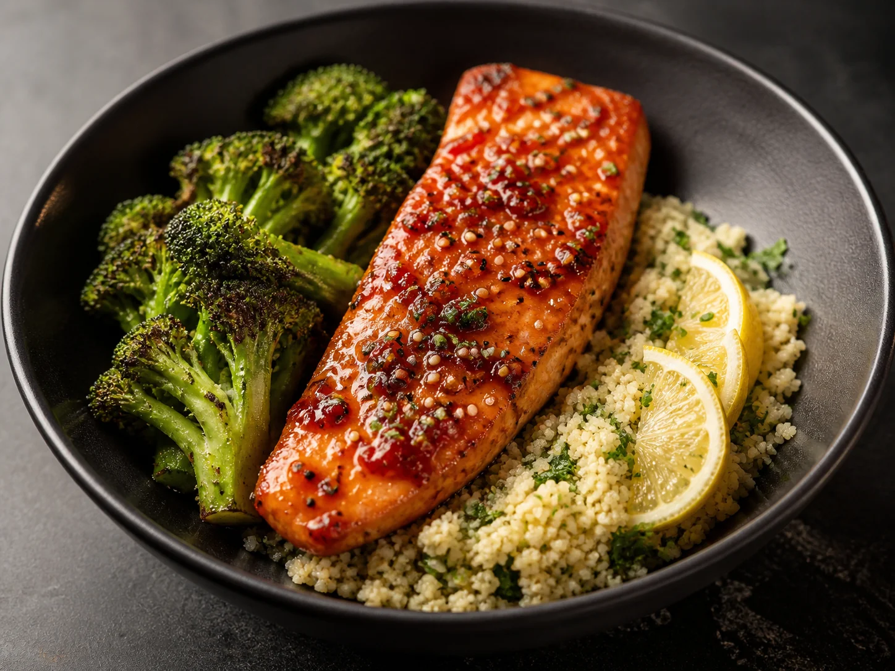
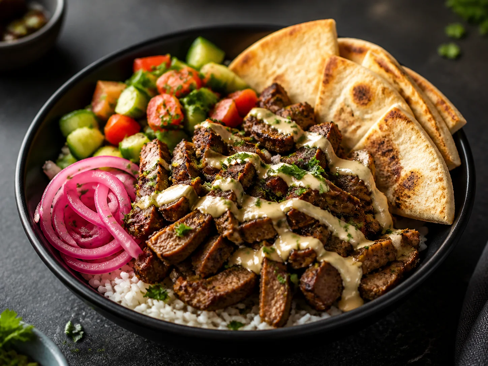
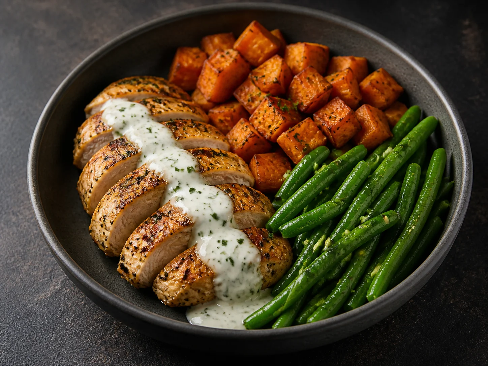

Planning is isolated
Meal ideas rarely update grocery quantities, budget, or preparation work as the week changes.
PrepFlow connects nutrition goals, weekly planning, grocery math, pantry awareness, and batch cooking in one continuous system.

Harissa salmon · 38g protein
Beef shawarma · meal prep
Lemon chicken · 32 minPROJECT SNAPSHOT · Independent consumer product · Working implementation
Three planned dinners share grocery totals and pantry subtraction. Each day keeps its own preparation progress, sample timer and recovery decisions.
A plan can hit nutrition targets and still fail at the grocery store or during a chaotic Sunday prep. PrepFlow was designed around the entire weekly job.
Meal ideas rarely update grocery quantities, budget, or preparation work as the week changes.
People juggle oven time, shared chopping, stovetop work, storage order, and food safety in their heads.
Calories, protein, dietary needs, equipment, time, and cost need to resolve into food someone will actually enjoy.
Choose a day, then swap a meal. In the product, that change recalculates nutrition, groceries, and the preparation flow.
The core value is not any single screen. It is the chain of updates that keeps the week coherent.
Nutrition targets, dietary rules, budget, training days, and available equipment shape the week.
Ingredients merge across recipes, pantry stock is subtracted, and quantities stay tied to their source meals.
Shared chopping, oven queues, and parallel tasks become one equipment-aware timeline.
Interactive steps, timers, and safe storage order guide the session without losing the overall plan.
Optimized across the whole week, not recipe by recipe.
The scheduler combines shared chopping, one oven queue, parallel stovetop work, and the safest storage order.
Each feature earns its place by reducing a real weekly coordination cost.
Daily calories and macros update from the meals actually scheduled, with training-day context and profile targets kept visible.
What is already at home comes off the grocery list, while ingredients nearing expiry get priority.
Aisle grouping, recipe sources, live checks, and a budget estimate turn the plan into a usable store trip.
Server-only integrations support planning and adaptation without placing provider secrets in the client. The offline experience remains useful without cloud setup.
100 healthy offline recipes in the native iOS edition, each paired with bundled product photography.
The repository includes an Expo web and Android edition, a true native SwiftUI iPhone and iPad application, a tested domain layer, Supabase schema and access controls, and server-only AI configuration.
A COMPLETE TASK
Use three two-serving dinners immediately, or skip preferences. Later goal changes affect only unstarted meals.
The selected dinner, nutrition, preparation estimate and shared weekly grocery totals change together. A started session needs an explicit reset decision.
Invalid servings keep the last valid week. Lost equipment pauses the current timer. Changes to already prepared quantities require an explicit adjustment.
Pause the sample timer, change servings or visit another day, then resume the retained step and elapsed time. Other dinners keep their plan and progress.
Inspect the current interaction
DECISIONS AND TRADEOFFS
A meal swap should update ingredient quantities, nutrition totals and the preparation view together.
Tradeoff. Precise-looking values need serving assumptions and source/estimate labels. A sample calculation is not individualized nutrition advice.
Goals, diet, budget and equipment can create a long setup. A small useful week should precede optional refinement.
Tradeoff. Conflicting constraints must be surfaced rather than resolved with unexplained substitutions.
Each dinner retains its own completed stages and elapsed sample time. A serving change updates future estimates; changing prepared quantities adds an explicit adjustment decision.
Tradeoff. A meal replacement resets only the confirmed day. Real timing, batch capacity and any extra quantity-adjustment time remain unverified.
WHAT THE WORK ESTABLISHES
| Evidence | What you can inspect | What remains unestablished |
|---|---|---|
| Working scope | The case describes coordinated app surfaces, bundled recipes and native/cross-platform builds. | This does not establish a deployed consumer service or validated dietary outcomes. |
| Illustrative study | A linked three-dinner study shows a coordinated swap, pantry subtraction once per week, optional first-run preferences, a sample timer and interruption recovery. | The figures are sample recipe values and estimated timing, not field-study measurements. |
| Next evidence | Observe a real planning, shopping and preparation week. | Actual rework, unused ingredients, kitchen interaction errors and sustained usefulness remain to be recorded. |
What you can inspectThe case describes coordinated app surfaces, bundled recipes and native/cross-platform builds.
What remains unestablishedThis does not establish a deployed consumer service or validated dietary outcomes.
What you can inspectA linked three-dinner study shows a coordinated swap, pantry subtraction once per week, optional first-run preferences, a sample timer and interruption recovery.
What remains unestablishedThe figures are sample recipe values and estimated timing, not field-study measurements.
What you can inspectObserve a real planning, shopping and preparation week.
What remains unestablishedActual rework, unused ingredients, kitchen interaction errors and sustained usefulness remain to be recorded.
The interaction examples make design decisions inspectable. Participant findings, endorsements and business outcomes are included only when an actual record is available.
Keep. Keep meal choice, servings, pantry subtraction and groceries connected to one plan. The sample swap makes a downstream quantity change inspectable.
Change next. Observe an interrupted preparation session and revise the schedule and controls around actual equipment, skill and timing. The current browser example retains a step; it does not verify a week of kitchen use.
Question to test. Does the connected workflow reduce coordination work across planning, shopping and preparation? A real week of use is needed to identify rework and unused ingredients.